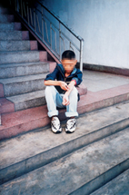

Michael Rasmussen
 De: La Frikipedia, la enciclopedia extremadamente seria.Michael Rasmussen es un conocido drogadicto (nacido el 39 de diciembre del año 1974 en Chueca,Madrid,Espiña). Especialista en el arte de la jeringuilla y el pastilleo y otras sustancias como el pegamento, el azúcar, la tiza, la aspirina, la testosterona... consiguió ser ciclista pues muchos drogadictos acaban en el ciclismo, especialmente en La Vuelta del Dopado.
De: La Frikipedia, la enciclopedia extremadamente seria.Michael Rasmussen es un conocido drogadicto (nacido el 39 de diciembre del año 1974 en Chueca,Madrid,Espiña). Especialista en el arte de la jeringuilla y el pastilleo y otras sustancias como el pegamento, el azúcar, la tiza, la aspirina, la testosterona... consiguió ser ciclista pues muchos drogadictos acaban en el ciclismo, especialmente en La Vuelta del Dopado.
 Rasmussen drogándose en el colegio
Comenzó en 2002 en el equipo CSC-MDA y lo despidieron a los pocos meses por arramplar con toda la droga reservada a los miembros del equipo. En el 2003 consiguió fichar por el Cocabank. En el 2007 después de una sobredosis, drogado y bebido y fumado participó en La Vuelta del Dopado, con sus compañeros de equipo Floyd Landis, Moratelli, Lance Amstrong, Pantanic, Indurain y como Director ténico a Pocholo.
Sus grandes dotes para tomar EPO y testosterona le permitieron ser casi durante toda la vuelta el primero en la "general de drogaos". Lo apodaban el "escalador" porque subía pendientes de 70% de inclinación con el piñón más chico y el plato más grande a velocidades cercanas a la luz. Pero finalmente a cuatro etapas del final, consiguiendo una ventaja sobre Alberto Contestador de 3 jeringuillas y media (en jerga ciclista, para medir distancias)su propio equipo el CocaBank, lo destituyó por mentiroso. Murió a los pocos días en una bañera en París, intentando emular a su hermano Jim Morrison.
INFANCIA
Michael es hermano pequeño de Jim Morrison, el prototipo de drogadicto por excelencia. Sus padres eran ciclistas. Con pocos meses aprendió a preparar un cóctel de Heroína y Cocaína en jeringuillas de cuatro puntas, que inventó para poder pincharse varias venas a la vez. En el colegio lo apodaban "pinchito".
Nunca llegó a terminar la primaria, asi que con 21 años decidió que los estudios no eran lo suyo. Así comenzó su etapa de escritor, escribiendo cosas como "no mata la droga, lo que mata es la dosis" "debes acostumbrar tu cuerpo a ingentes cantidades de droga y así no será mala y podrás conseguir grandes cosas, tales como ganar un Tour De Francia o hacer el record en 100 metros lisos". Después de su etapa como escritor, se dedicó a la ciencia, creando nuevos tipos de drogas como la Rasmuseína. Con 26 años vió su gran oportunidad para lograr algo grande en el Ciclismo, sobre todo en La Vuelta del Dopado. Pero como todos sabemos lo echaron por mentiroso. Murió el 2 de agosto de 2007 en una bañera de una casa perdida de París.
- Sus aficiones son:
- La droga
- Todo lo que tenga forma de raya
- Ir drogado
- Jim Morrison
- Ir drogado con Jim Morrison
- Ir drogado y con droga en los bolsillos con Jim Morrison
- Sus enemigos son:
- La Salud
- El deporte sano
- Las dietas
- Los Médicos
- Green Peace
CURIOSIDADES
- Una vez se metió una raya por el culo
- Sus películas favoritas son: 20 gramos y Harry Petas
- Tiene el record guiness de tomar droga.
Autor(es):
- Bazuke
- Melasudamucho
- Cibercrank
- Lljosemll
- Jordipau
Frikipedia 2005-2016, Licencia
GFDL 1.2 - Extraído por FrikiLeaks